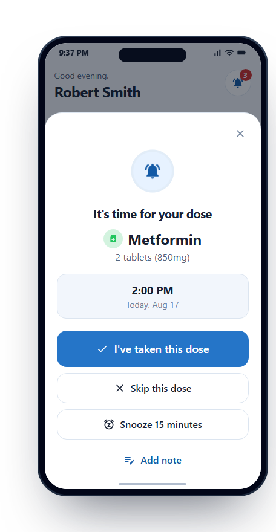
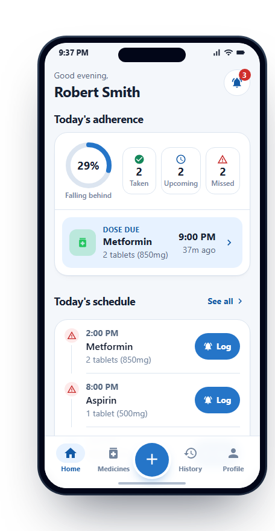
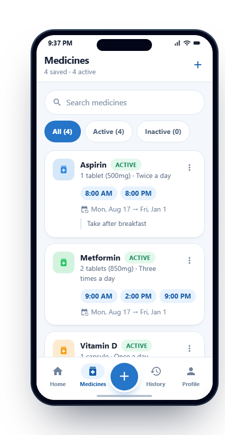
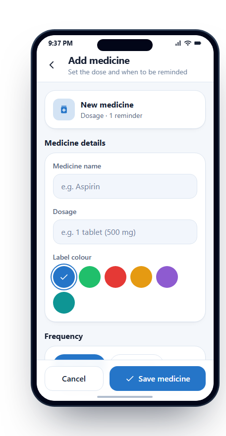
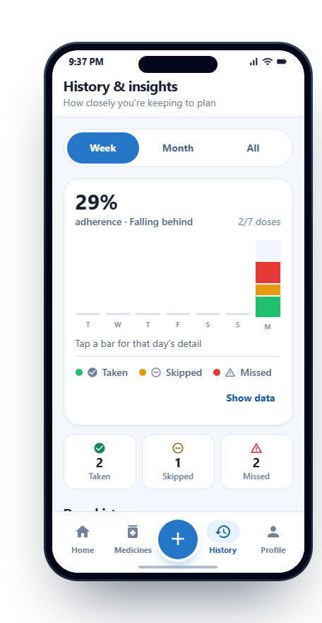
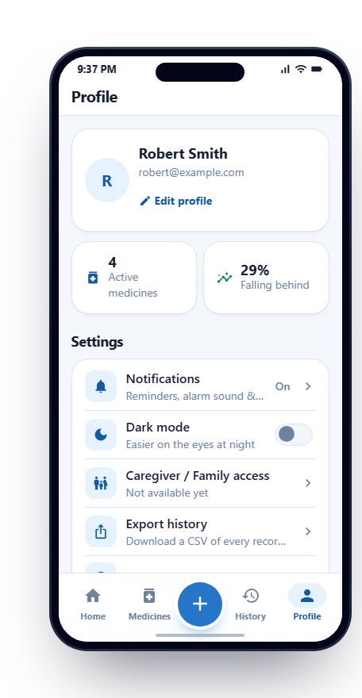
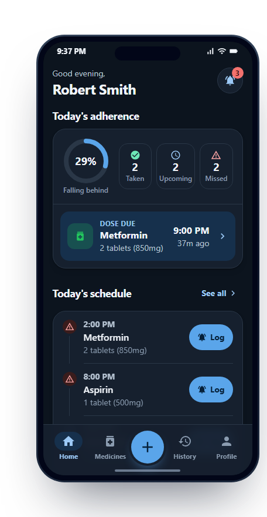

Dose reminders · v1.0
Medicine Notifier holds the day's doses, rings when each one is due, and records what you answered — so nobody has to keep score in their head.
React NativeExpoDjango RESTPostgreSQL

The moment
When a dose comes due, a confirmation sheet takes over the screen, sounds an alarm at your chosen volume, and posts a system notification. Nothing is buried in a list — there is one question on screen and three ways to answer it, plus a note if the dose needs one.
I've taken this dose
The alarm stops and the dose is written to history with the time you answered. Today's adherence updates immediately.
Snooze 15 minutes
The alarm stops and the same dose returns a quarter of an hour later. Useful when the glass of water is in the other room.
Skip
A deliberate skip is not the same as forgetting, so it gets its own state — visible in history rather than quietly lost.
No answer
A dose with no response an hour past its time is marked missed on the home screen, so gaps are obvious the next time you look.
A day
Four medicines, seven doses. The home screen shows the day as it stands right now: what has been answered, what is due, what is still ahead.
2 of 7 taken · 29% adherence so far today · next dose 20:00
Screens
Everything sits behind four tabs and one add button. Every dose state carries a word and an icon as well as a colour, and times, dosages and counts are set in tabular figures so a column of numbers stays readable at a glance.






Scroll for more →
Design
The people most likely to need a dose reminder are often the least served by small grey type. A handful of rules held the interface together:
Run it
An Android app built with React Native and Expo, talking to a Django REST API backed by PostgreSQL. Your account, medicines and dose history live in the database, so they follow you to any device you sign in on.
# from backend/ — once python -m venv venv venv\Scripts\pip install -r requirements.txt copy .env.example .env # create the PostgreSQL database and role venv\Scripts\python scripts\create_db.py --superuser-password "..." venv\Scripts\python manage.py migrate # run it — 0.0.0.0 so the phone can reach it venv\Scripts\python manage.py runserver 0.0.0.0:8000
# from mobile/ npm install npx expo start # press a for an Android emulator # reminders while the app is closed need a real build npx expo run:android
mobile/services/api.ts is the only file that talks to the server. It finds the API automatically — the LAN address Expo is serving from, or 10.0.2.2 on an emulator — and EXPO_PUBLIC_API_URL overrides it.